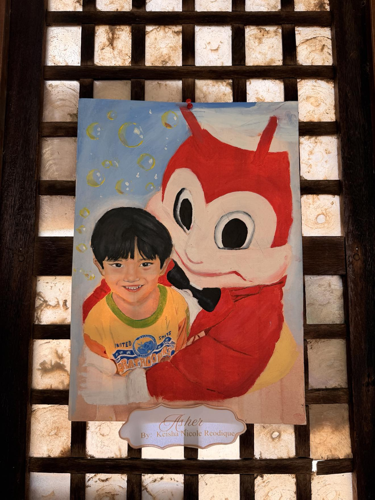

01

Work No. 01
Asher
Keisha Nicole Reodique
A child's joy is rendered in warm, luminous paint — the boy's gentle smile holds a whole afternoon, while the familiar red figure beside him hums with the sweetness of a cherished memory.
Oil on Canvas